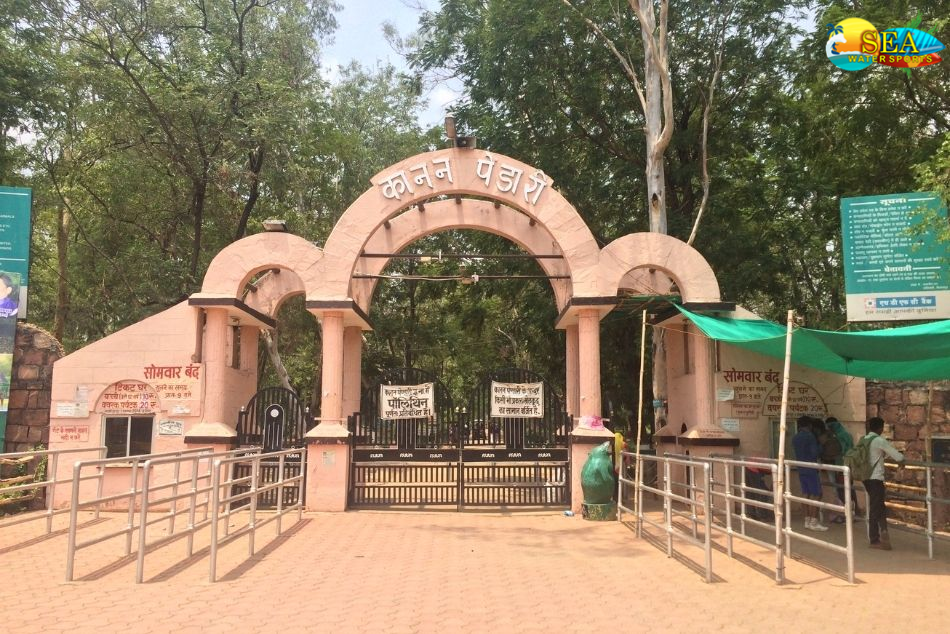
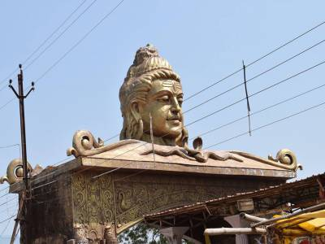
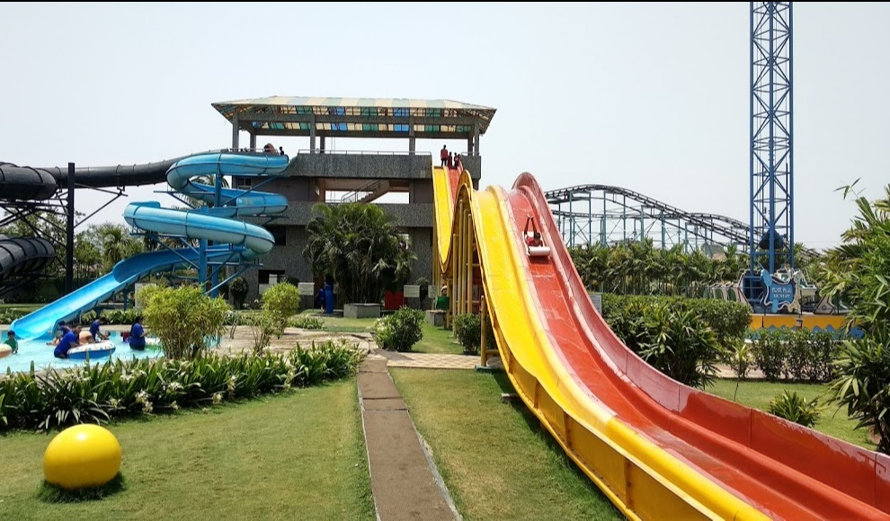

Visit BILASPUR
Enjoy the culture and sports in this vibrant and beautiful district of Chattisgarh.
Top three activities to do at Bilaspur

Go for a picnic in this zoo
Bilaspur city is famous for Kanan Pendari Zoo.

Worship in this holy place
For many decades, the Mahamaya devi temple and the town of Ratanpur have attracted the attention of scores of historians and archaeologists.

Best hangout place ever
Bubble Island in Bilaspur is one of the leading businesses in the Water parks.
Your Guide
“I have lived at Bilaspur for over 19 years, so I can show you all of its best parts and hidden secrets.”
Bhanu Prakash Mahant